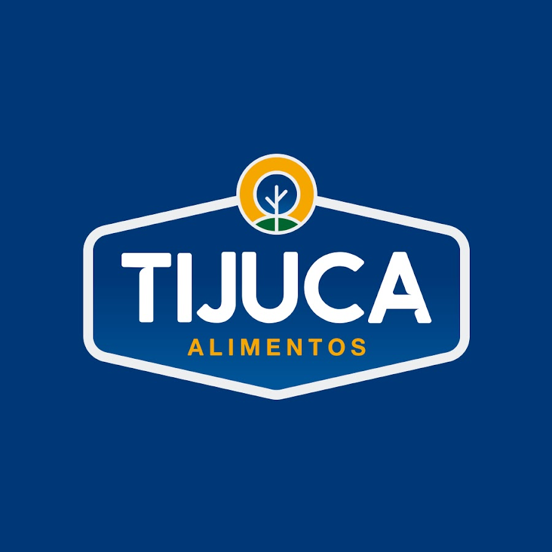

Latest Projects

Wesley Viagens!
No nosso site Wesley Viagens!, você encontra as melhores ofertas para viajar com amigos, família ou a namorada. Nossa seção de avaliações permite que você veja o que os clientes estão dizendo, ajudando na sua escolha. Venha explorar o mundo conosco e descubra experiências inesquecíveis!

Tijuca visitas
Esse sistema tem o objetivo de gerenciar as visitas à Tijuca Alimentos, permitindo o registro e acompanhamento de todas as visitas feitas à empresa. A funcionalidade inclui o registro de informações como data, propósito da visita e pessoas envolvidas, facilitando o controle e a organização.